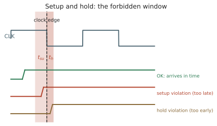

本页目录
电路 II · 时序、时钟与静态时序分析
层次：本科核心 + 业界日常 ｜ 这一页是数字后端工程师的主业。 有了逻辑门还不够——必须让它们在时间上协同。本页讲同步设计的基本契约（建立/保持时间）、时钟网络的现实困难，以及决定"这颗芯片能跑多少 GHz"的那个分析：静态时序分析（STA）。这是学校里常被轻描淡写、而在工业界占据大量工时的内容。
学习层：同一条路径，为什么降频能救 setup 却救不了 hold？
1. 具体谜题：数据到底是太晚还是太早？
考虑一条寄存器到寄存器路径：\(t_{cq}=0.10\ \mathrm{ns}\)、组合逻辑最大延迟 \(0.75\ \mathrm{ns}\)、最小延迟 \(0.04\ \mathrm{ns}\)、\(t_{su}=0.10\ \mathrm{ns}\)、\(t_h=0.08\ \mathrm{ns}\)，时钟偏斜 \(+0.02\ \mathrm{ns}\)，抖动预算 \(0.03\ \mathrm{ns}\)，周期 \(T=1.0\ \mathrm{ns}\)。这条路径的风险来自慢路径还是快路径？若把周期改成 \(0.8\ \mathrm{ns}\) 或 \(1.2\ \mathrm{ns}\)，哪一个裕量会变化？
先预测：慢工艺角更容易 setup 违例，快工艺角更容易 hold 违例；降低频率能增加 setup slack，但对 hold slack 是否完全无效。
2. 先预测：在打开波形前写下修复动作
交互台先让你选择三项：
- 当前是 setup fail、hold fail、双 fail 还是通过？
- 若只允许改周期，哪一种违例可能被修复？
- 若 hold 违例，应该减少数据延迟还是插入最小延迟单元？
提交预测后，实验才显示 launch/capture 边沿、数据到达窗口、setup/hold slack 和 slow/fast PVT 角。注意，时序判断的对象是“到达时间相对于禁止窗口”，不是某一次随机输入波形。
3. 最小心智模型：一条路径的两个时间边界
发射触发器在时钟边沿后经过 \(t_{cq}\) 才把数据送入组合逻辑；捕获触发器在下一条边沿前需要 setup、边沿后仍要 hold。最大延迟决定数据能否及时到达，最小延迟决定数据会不会过早闯入当前捕获窗口。
STA 把每条路径压缩成一张最坏情况账本，不靠激励覆盖率。它的边界是约束必须正确：假路径、多周期路径、generated clock、CDC 和相关抖动若描述错误，穷举只会稳定地给出错误答案。
4. 形式机制与不变量：setup、hold 和 PVT
按本页符号，建立与保持裕量为
通过条件是两者都不小于 0。所需最小周期为 \(T_{\min}=t_{cq}+t_{\mathrm{logic,max}}+t_{su}+t_{\mathrm{jitter}}-t_{\mathrm{skew}}\)，最高频率近似 \(1/T_{\min}\)。改变 \(T\) 只改变 setup 方程，不出现在 hold 方程；这是最重要的不变量。慢角应放大最大延迟，快角应缩小最小延迟，抖动则同时消耗两类预算。
5. 交互实验：把 STA 变成可定位的时间线
无 JavaScript 时的静态读法：先取 \(T=1.00\ \mathrm{ns}\)、\(t_{cq}=0.10\ \mathrm{ns}\)、\(t_{\mathrm{logic,max}}=0.75\ \mathrm{ns}\)、\(t_{\mathrm{logic,min}}=0.04\ \mathrm{ns}\)、\(t_{su}=0.10\ \mathrm{ns}\)、\(t_h=0.08\ \mathrm{ns}\)、\(t_{\mathrm{skew}}=0.02\ \mathrm{ns}\)、\(t_{\mathrm{jitter}}=0.03\ \mathrm{ns}\)。默认账本如下。
| 角/动作 | setup slack | hold slack | 结论 |
|---|---|---|---|
| 名义角 | \(1+.02-.03-.10-.75-.10=+0.04\ \mathrm{ns}\) | \(.10+.04-.08-.02-.03=+0.01\ \mathrm{ns}\) | 通过但余量很薄 |
| 周期改为 \(0.80\ \mathrm{ns}\) | \(-0.16\ \mathrm{ns}\) | \(+0.01\ \mathrm{ns}\) | 只制造 setup 违例 |
| 最小延迟降到 \(0\) | \(+0.04\ \mathrm{ns}\) | \(-0.03\ \mathrm{ns}\) | hold 违例，降频无效 |
脚本提供 setup danger、hold danger、clean 三个确定性预设，并可调周期、最大/最小逻辑延迟、偏斜和抖动。时间线、各 PVT 角的最小 slack、修复建议与最高频率会同步更新；所有输入都有单位和可键盘操作的滑块。
6. 反例与失效边界：STA 的“穷举”不等于无条件正确
- “把时钟频率降下来就安全”只对 setup 违例成立；hold 是同一捕获边沿附近的最小延迟问题。
- “快角总是最好”忽略快角对 hold 和最小脉宽更危险；慢角也可能使 setup、功耗和 IR drop 恶化。
- “slack 为正就一定可靠”忽略时钟相关性、随机抖动、OCV/AOCV/POCV、串扰和约束覆盖；signoff 需要多模式多角。
- “仿真没遇到错误所以通过”不能覆盖未激励路径；但 STA 也会被错误的 false path 或 multicycle 约束欺骗。
7. 迁移题：用代价选择修复手段
若一条路径 setup slack 为 \(-80\ \mathrm{ps}\)，另一条路径 hold slack 为 \(-25\ \mathrm{ps}\)，请分别选择降频/逻辑优化/加大驱动与插入延迟单元，并说明它们对面积、功耗和相邻路径的副作用。再问：流水线切分为什么能改善最长组合路径，却会增加 \(t_{cq}+t_{su}\)、latency 与分支失败代价？
一、同步设计的契约
绝大多数数字芯片采用同步设计：所有状态元件（触发器）由同一个时钟边沿更新。这带来一个简单而强大的约定——只要每条组合路径能在一个时钟周期内稳定下来，整个系统的行为就是可预测的。
触发器对输入有两个时间要求：
- 建立时间 \(t_{su}\)：数据必须在时钟边沿之前稳定这么久；
- 保持时间 \(t_h\)：数据必须在时钟边沿之后保持这么久。
违反任一条，触发器可能进入亚稳态——输出既非 0 也非 1，在一段不确定的时间后随机落定。亚稳态无法被完全消除，只能把失效概率压到可接受（用同步器链，按 MTBF 指标设计）。跨时钟域（CDC）处理是数字设计中最容易出错、也最难调试的部分之一。
二、两个时序约束
设时钟周期 \(T\)，组合逻辑延迟 \(t_{logic}\)，触发器时钟到输出延迟 \(t_{cq}\)：
建立时间（setup）约束——决定最高频率：
保持时间（hold）约束——与频率无关：

两条约束的性质截然不同，这是本页最要紧的区分：
| 建立时间违例 | 保持时间违例 | |
|---|---|---|
| 成因 | 路径太慢 | 路径太快 |
| 与频率关系 | 降频可修复 | 降频无用 |
| 修复手段 | 优化逻辑、加大驱动、流水线切分 | 插入缓冲/延迟单元 |
| 危险程度 | 影响性能 | 芯片直接功能失效 |
保持时间违例是"硅片报废"级的问题——它不能靠降频规避，流片后发现基本只能重做。因此后端流程会不惜代价插入大量延迟单元来修复保持时间（哪怕付出面积与功耗）。
三、时钟：理想与现实
理想时钟同时到达所有触发器。现实中：
- 时钟偏斜（skew）：不同触发器收到边沿的时刻不同。偏斜可正可负地影响两类约束——同向偏斜放松建立时间但收紧保持时间（所谓"有用偏斜"可被工具刻意利用）；
- 时钟抖动（jitter）：周期本身的随机波动（源自 PLL 噪声、电源噪声）。抖动只会消耗裕量，无法被利用；
- 时钟树功耗：时钟活动因子接近 1，且要驱动全芯片的触发器，时钟网络常占芯片总功耗的可观比例。
时钟树综合（CTS）是后端流程的关键一步：构造缓冲器树，使偏斜受控、且插入延迟合理。H 树等平衡结构在理论上偏斜最小，实际中则用工具自动构造并结合有用偏斜优化。
低功耗手段：时钟门控（在不需要更新的模块上关断时钟）是收益最高的低功耗技术之一，综合工具会自动插入。
四、静态时序分析（STA）
STA 的思想：不做仿真，而是穷举所有时序路径，用延迟模型计算每条路径的裕量，检查是否满足约束。
为什么不用仿真：动态仿真只能覆盖你施加的激励，无法保证覆盖最坏情况路径。STA 是穷尽的、与激励无关的——它检查所有路径。代价是必须处理"假路径"（逻辑上永远不会同时激活的路径）与"多周期路径"，这需要设计者用约束文件（SDC）告诉工具。
约束文件写错是工业界的经典事故来源：约束太松 → 芯片跑不到目标频率甚至功能失效；约束太紧 → 面积功耗白白浪费、收敛困难。
PVT 角与多角多模式分析：延迟随工艺（Process）偏差、电压（Voltage）、温度（Temperature）变化，必须在多个"角"（如慢角、快角）下同时满足约束。现代芯片还有多种工作模式（高性能/低功耗/测试），于是要做 MMMC（多模式多角）分析——组合数量巨大，时序收敛因而成为后端流程中最耗时的环节。
一个反直觉的点：最快的工艺角对保持时间最危险（路径太快），最慢的角对建立时间最危险。所以"工艺做得好"不等于"没问题"，两头都要管。
五、流水线：用面积换频率
若单周期路径太长，就把它切开，中间插入触发器——流水线（pipelining）。
切得越细，最长段越短，频率越高。代价：
- 每级增加 \(t_{cq}+t_{su}\) 的固定开销 → 切分收益递减；
- 触发器面积与功耗增加；
- 延迟（latency）变长，且分支预测失败的代价上升——这正是处理器流水线深度存在最优值的原因（🔗 cs 站体系结构线）。
这是又一处与 cs 站的接口：那里讲流水线冒险与分支预测，这里讲它的物理动因与代价。
六、后端流程速览
数字后端（physical design）的主要步骤，第十三页会展开工具视角：
- 综合：RTL → 门级网表（映射到标准单元库）；
- 布局（placement）：确定每个单元的位置；
- 时钟树综合（CTS）；
- 布线（routing）：连接所有信号；
- 时序收敛：反复优化直到所有路径裕量非负；
- 物理验证：DRC/LVS；
- 签核（signoff）：STA、功耗、IR 压降、电迁移、串扰分析。
"时序收敛"是这个流程中最痛苦的部分——它是一个多目标（时序、面积、功耗、可布线性）互相冲突的迭代过程，往往需要数周到数月，且高度依赖工程师经验。这是微电子行业里"经验值钱"的典型环节。
七、要点
- 建立时间限频率、保持时间决生死——两者性质完全不同；
- STA 是穷举而非仿真，约束文件是它的输入契约，写错代价极高；
- 时钟网络是功耗大户，时钟门控是首选优化；
- PVT 多角分析使问题规模爆炸，时序收敛因而成为工程主战场；
- 流水线是用面积、功耗与延迟换频率的权衡，存在最优深度。
下一页：转向模拟电路。数字世界可以靠抽象层层隔离，模拟世界不行——那里每个寄生参数都直接影响性能，而且它享受不到缩放的红利。